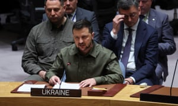

World Uk Climate crisis Enviroment Science Global development Football Tech Business Obituaries
Live Zelenskiy calls for Russia to lose UN veto power; UN chief says 'humanity has opened gates of hell' on climate
Full story Ukrainian president calls for Russia's veto power to be removed and UN reform
Climate crisis Leaders of biggest polluting nations skipping summit
United Nations Inquiry into rights in Iran urged to look at detention of dual nationals
Foreign ministry urges its citizens to exercise 'extreme caution' in Canada
Extreme weather shows need for early warning systems, says minister
Brain circuit behind release of milk at baby's cries uncovered
Ex-Trump aide Cassidy Hutchinson claims Rudy Giuliani groped her on January 6
Royal lights flame at Paris's Arc de Triomphe for start of three-day visit
Viral series about teapot escaping from British Museum to become film